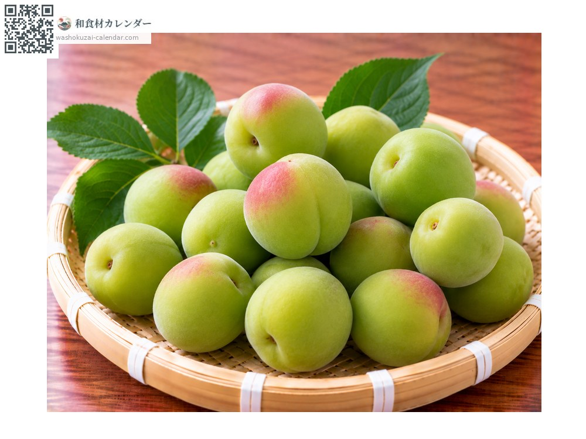
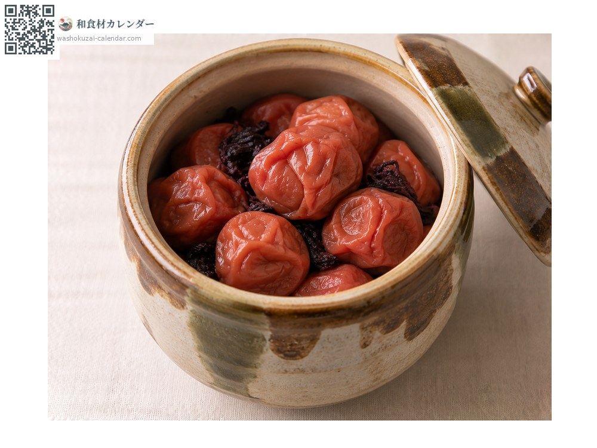
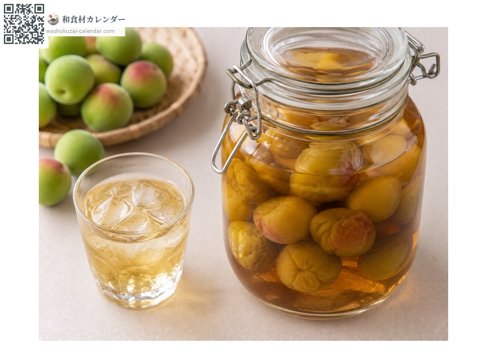
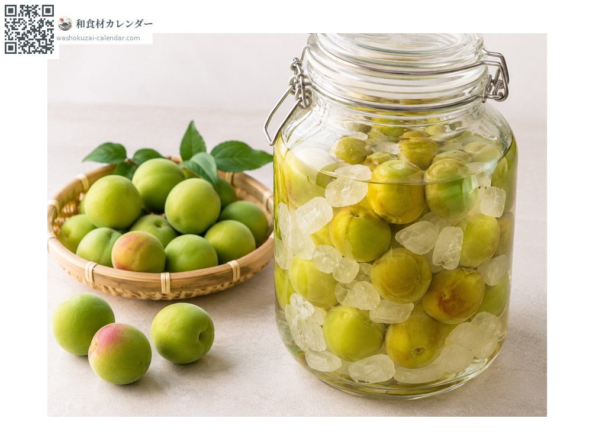
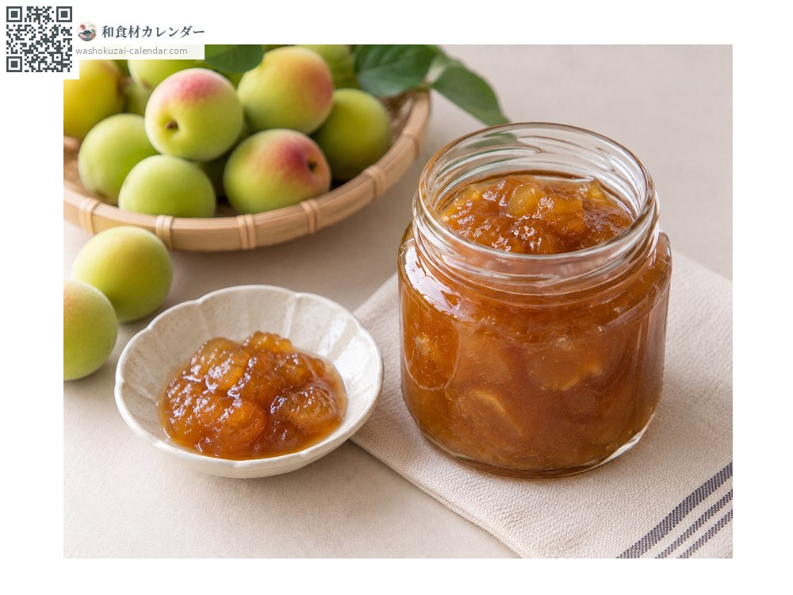

ผลไม้
บ๊วย
ウメ うめ ume
ชื่ออื่นume
อร่อยที่สุดในเดือน มิ.ย.

ช่วงที่อร่อยที่สุด
ม.ค.
ก.พ.
มี.ค.
เม.ย.
พ.ค.
มิ.ย.
ก.ค.
ส.ค.
ก.ย.
ต.ค.
พ.ย.
ธ.ค.
ช่วงอร่อยที่สุดมีจำหน่าย
วิธีปรุง

อุเมะโบชิ (บ๊วยดองเกลือตากแห้ง)
ดองเกลือแล้วนำไปตากแห้ง

อุเมะชู (เหล้าบ๊วย)
ดองบ๊วยดิบกับน้ำตาลกรวดและเหล้าโชจู

น้ำเชื่อมบ๊วย
ดองกับน้ำตาลกรวด

แยมบ๊วย
เคี่ยวบ๊วยสุกจนข้น
วิธีเลือก
เลือกตามวิธีใช้ ทำเหล้าบ๊วยหรือน้ำเชื่อมใช้บ๊วยดิบแข็ง ทำบ๊วยดองใช้ผลสุกสีเหลือง และต้องไม่มีรอยช้ำ
วิธีเก็บรักษา
บ๊วยดิบควรแปรรูปก่อนสุก กินสดไม่ได้จึงต้องแปรรูปเสมอ
แหล่งผลิตหลัก
เกร็ดน่ารู้
นังโกอุเมะของวากายามะมีชื่อเสียง เมล็ดบ๊วยดิบมีสารเป็นพิษ จึงต้องแปรรูปก่อนกินเสมอ